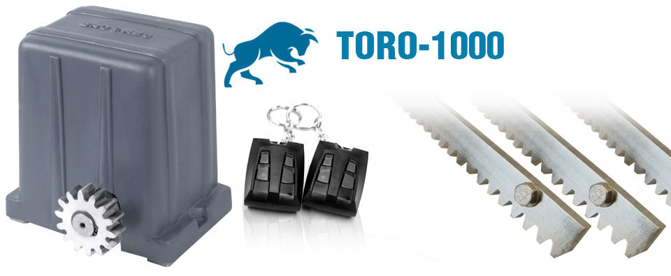

Motor Corredizo Brumec Liebre

Detalles:
El motor LIEBRE es la mejor elección que puede tener hoy para portones corredizos. El equipo abre y/o cierra un recorrido de 3 metros en 6 segundos. Máquina robusta, con tecnología de punta. Puede ser aplicado en portones de hasta 500 kg. y puede operar con una frecuencia de hasta 1 ciclo cada dos minutos.
Motor Corredizo Industrial toro 1000

Detalles:
El motor TORO es la mejor elección que puede tener hoy para portones corredizos industriales. El equipo abre y/o cierra un recorrido de 3 metros en 9 segundos. Máquina robusta, con tecnología de punta. Puede ser aplicado en portones de hasta 1000 kg. y puede operar con una frecuencia de hasta 1 ciclo cada dos minutos.
Motor Levadizo Nacional

Detalles:
Por sus componentes de última tecnología se adapta a una mayor velocidad en la apertura y cierre del portón, cubriendo en forma amplia las exigencias del mercado, brindando una entrada más rápida y segura al hogar. Equipo silencioso, confiable y seguro construido con engranajes de acero doble enchavetado, montado sobre rodamientos blindados y lubricado con grasa sintética de alta temperatura y para alta presión de contacto. Fácil desbloqueo manual Control de apertura limitado por fines de carrera y tiempo de trabajo. Embrague electrónico para la detención automática por obstrucción. IDEAL COCHERAS CON ALTO TRÁNSITO
Motor Pivotante Pivus
Detalles:
Motor de uso residencial para portones pivotantes dobles, permite hasta 18 aperturas/cierres por hora, puede programarse con retardo en un motor, para que primero empiece a abrir una hoja y luego la otra, lo mismo cuando cierra. Para hojas de hasta 2 mts. c/u. fácil instalación y cierra los 90º en 8 segundos, brindando mayor seguridad y confort. En caso de corte del suministro eléctrico, cuenta con destrabe manual por llave.
KIT Camaras dahua
Detalles:
• WizSense DETECCION INTELIGENTE • Dispone de 8 entradas de vídeo por conexión BNC admitiendo HDVCI, TVI, AHD, IP y analógico. • Con la posibilidad de utilizar 8 canales BNC (HDCVI o analógico indistintamente) más 2 canal IP o utilizar los 10 canales en IP como si fuese un NVR. • El XVR soporta cada canal IP de hasta 5MP resolución HD (2560 x 1920) compatible con ONVIF 16.12 • Cuenta con 2 salidas de vídeo: una salida VGA y una salida HDMI Full HD. • Procesador embebido. • H.264 video compression • Soporta entradas de video HDCVI/AHD/TVI/CVBS/IP • Max 10 channels IP camera inputs • Long transmission distance over coax cable • Soporta Discos Rigido 1 SATA HDD, a 6TB Grabación por Detección de Movimiento en DVR: La función de grabación por detección de movimiento permite ahorrar espacio en disco.
Kit Alarma Hexacom Ah222revo
Detalles:
Gabinete de ABS resistente al alto impacto, medidas 300 x 300 x 110 mm. Exclusiva APP para smartphones ANDROID y IOS. Activación Total (modo ME VOY) /Parcial (modo ESTOY) por control remoto. Compatible con teclado inalámbrico con menú guiado por voz FLYBEE. Función de disparo de sirena por pánico, por control remoto. Aviso por llamada ante un disparo de alarma. Tiempos de entrada, salida y sirena configurables. Visualización de armado por LED de sirena. Confirmación sonora de armado y desarmado por Beeps de sirena. Zonas predefinidas para una fácil instalación. 3 zonas cableadas, max. 6 sensores de movimiento infrarrojos. 9 zonas inalámbricas, max. 60 dispositivos inalámbricos. Agenda de 5 teléfonos para notificaciones SMS por roboo intrusión. Aviso de corte y restitución de energía eléctrica en tiempo real. Protección por sobre-tensión y sobrecarga de consumo. 1 salida PGM auxiliar configurable por eventos del sistema. Configuración simple mediante SMS.
Cerco Electrico Perimetral Porwer Shock

Detalles:
Es un dispositivo legal para la protección de la propiedad privada. Consta de una central que electrifica una cerca de hilos desnudos de aluminio rodeando el perímetro vulnerable de la propiedad. Dicha central monitorea la cerca activando una alarma sonora ante un intento de intrusión ya sea por corte o contacto y envía un mensaje a un teléfono celular. A diferencia de una alarma tradicional que solo disuade por la señalización y el alerta sonoro, el cerco eléctrico es una barrera defensiva activa que provoca en el intruso una descarga de miles voltios. Este dispositivo no tiene costos de mantenimiento y el consumo eléctrico es bajísimo.